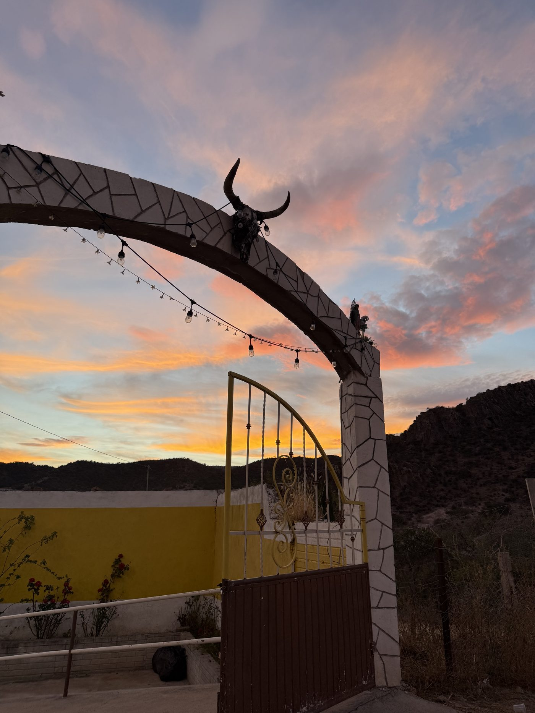

I'm a Political Science PhD student at UCLA, specializing in Race, Ethnicity, and Politics. My research centers on Latino public opinion, minority coalition politics, and racial identity in American electoral behavior.
I'm interested in when and why minority groups form political coalitions — and what stands in the way. My work combines survey experiments, observational data, and causal inference to study these questions.
Previously, I was a predoctoral fellow at the Stanford Institute for Excellence in Survey Research. I hold a B.A. in Political Science from the University of Pennsylvania (2025). I grew up on the South Side of Chicago and I'm a first-generation college student.
